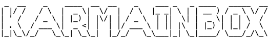

Prioritize your Gmail like a pro.
KarmaInbox is a Chrome extension that ranks your emails based on importance, gives AI-generated summaries, and helps you focus on what matters most.
If your inbox feels like chaos, KarmaInbox is the calm filter you didn’t know you needed.
Why KarmaInbox?
- Smart scoring system for email priority
- AI-powered summaries using GPT, Claude, Gemini & more
- Multi-account Gmail support
- Secure & encrypted, with zero data leakage
What people are saying
"I just want this to be built into Gmail forever." — Early user
"It's like having a chief of staff for your inbox." — Beta tester
"Tried it out and it instantly cleared 70% of my mental load." — Startup founder
How it works
- Install KarmaInbox from the Chrome Web Store
- Connect your Gmail account securely
- Watch your inbox reorganize itself by importance
- Skim summaries instead of threads
FAQ
Is my data safe?
Yes. KarmaInbox uses OAuth 2.0 and stores everything locally in your browser with encryption.
Which email accounts are supported?
Any Gmail account — personal or Google Workspace.
What AI does it use?
You can bring your own API keys for OpenAI, Claude, Gemini, or Ollama.